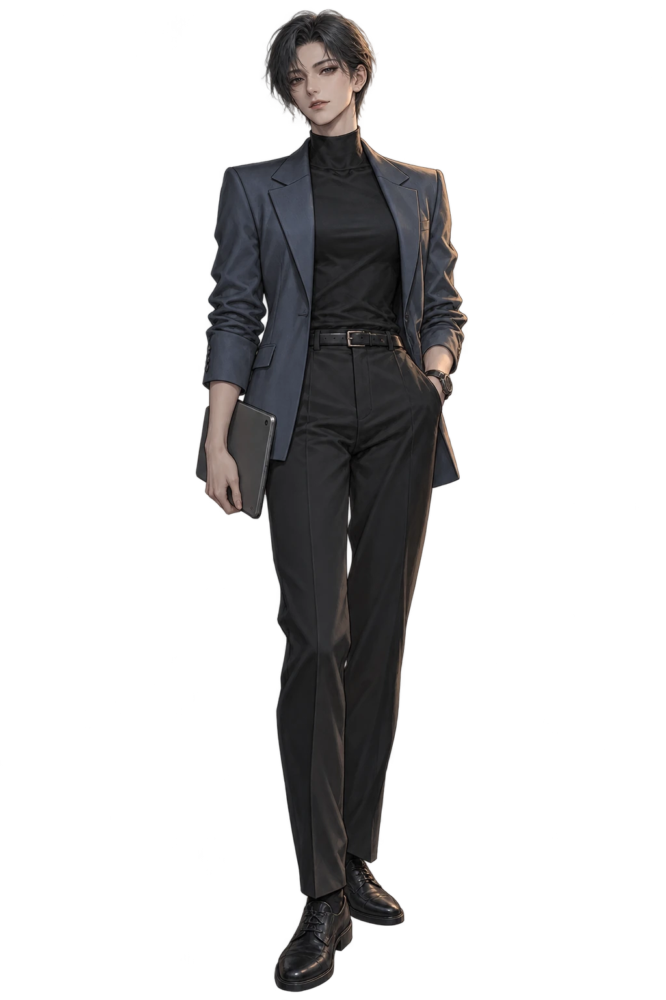
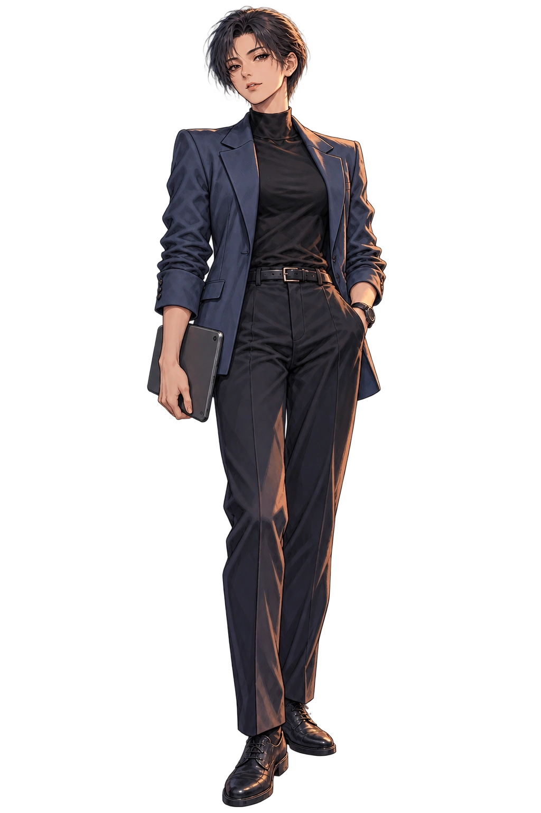
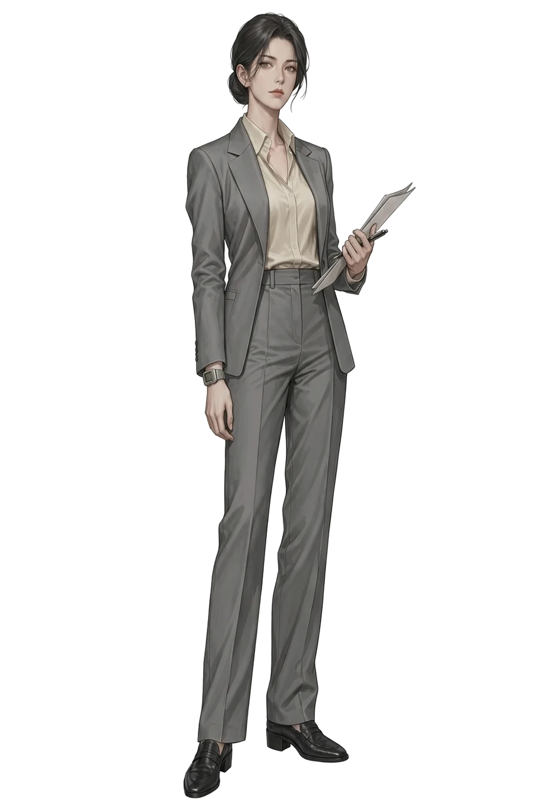
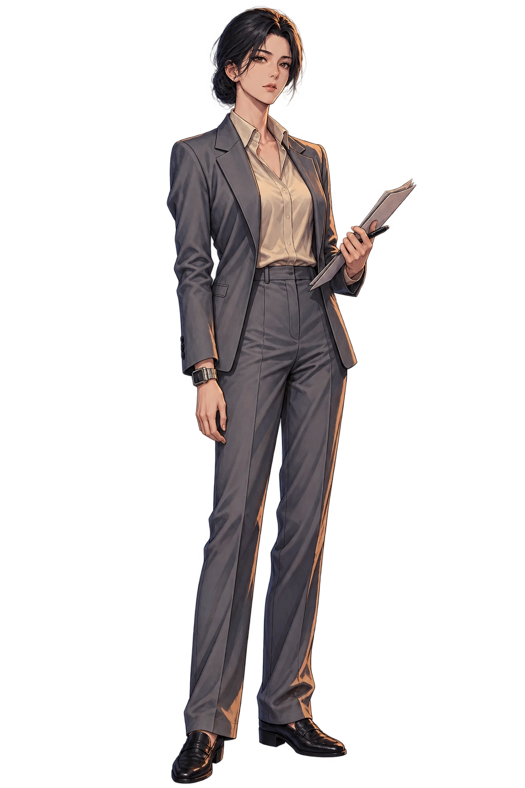
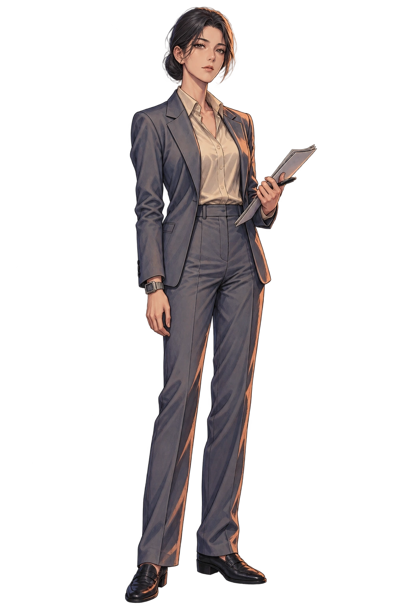
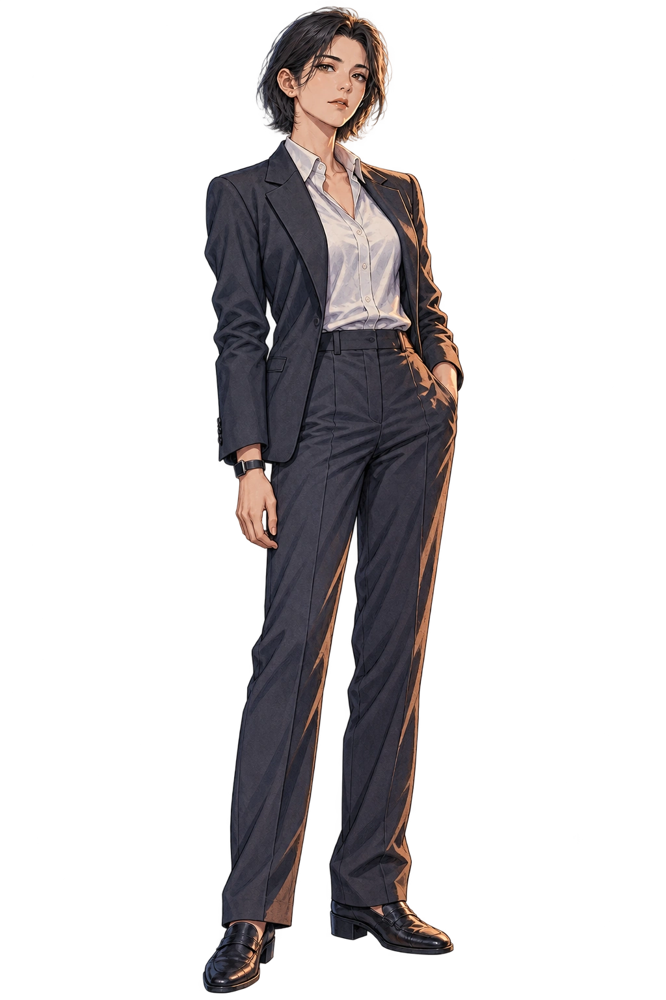
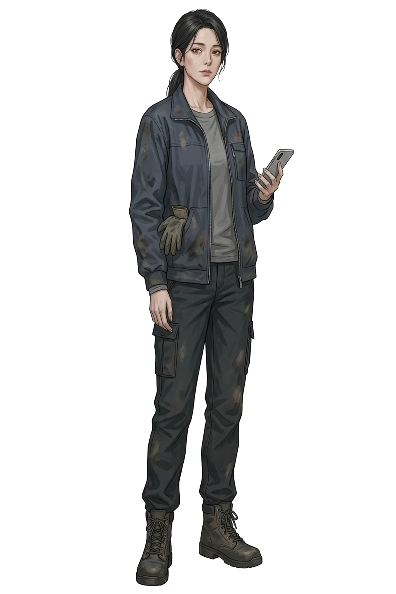
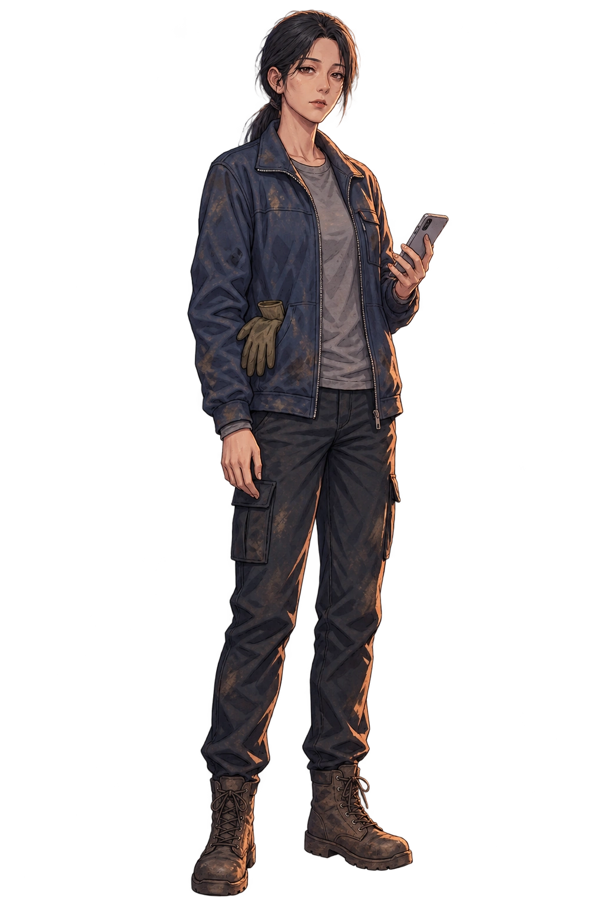
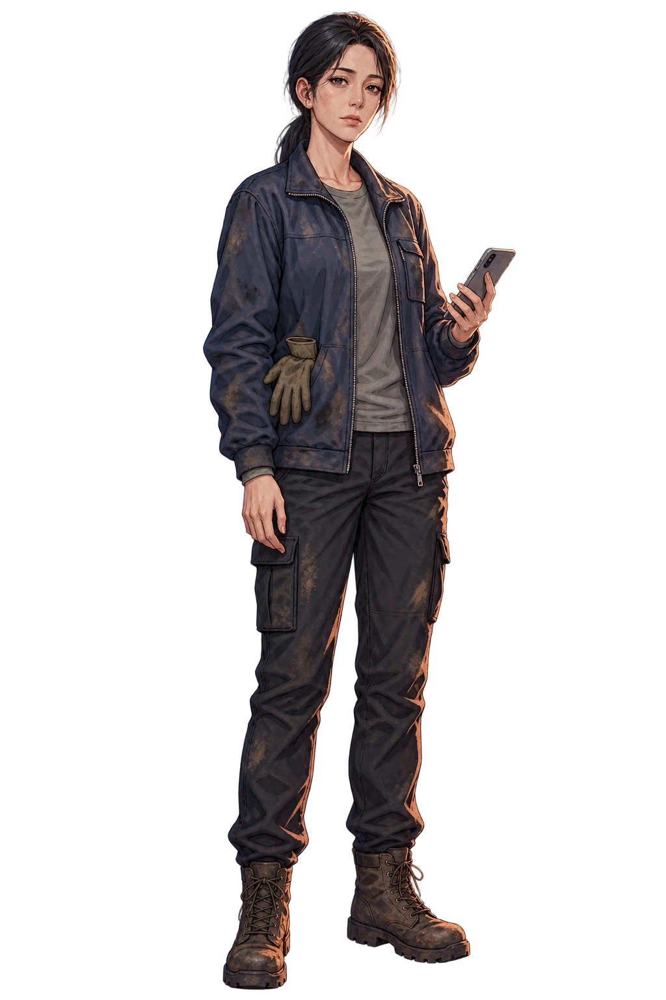

19~22화 인물 제작 참고 원화
각 인물의 원본과 A/B 참고 그림을 나란히 볼 수 있습니다. 내부 제작 연속성 참고: 강연우 A · 윤세라 A · 백윤하 A · 최은경 B · 마정훈 B. 이는 작가의 최종 선택이나 설정·canonical 확정이 아닙니다.
강연우
남색 재킷 · 태블릿

기존 원화

후보 A
후보 B
윤세라
정장 · 단말

기존 원화

후보 A

후보 B
백윤하
연령감 있는 단정한 인상

기존 원화
후보 A

후보 B
최은경
현장 복장 · 작업화

기존 원화

후보 A

후보 B
마정훈
정돈된 머리 · 어두운 재킷

기존 원화
후보 A
후보 B
밤샘 상태 참고